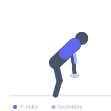

Exercise guide / Chest-Supported Row (Alternating Arms)
Chest-Supported Row (Alternating Arms)
The alternating chest-supported row performs each arm separately on an incline bench, allowing the non-working arm to hold at peak contraction while the other arm descends and returns. This creates a unique combination of isometric and dynamic loading within a single set, increasing total upper back time under tension while maintaining strict torso support.
Primary muscles
latissimus dorsi
rhomboid major
Secondary muscles
biceps brachii
trapezius middle
Equipment
Standard Barbell
Dumbbell (Fixed)


Starting position
- Lie prone on an incline bench set to 30-45 degrees. Hold a dumbbell in each hand, arms hanging down.
Setup
- Set the incline bench so that the chest is fully supported throughout the movement. Use a weight that allows clean alternating reps.
Steps
- Step 1: Row both dumbbells to the top position simultaneously to start.
- Step 2: Hold the left dumbbell at peak contraction.
- Step 3: Lower the right dumbbell to full extension while holding the left.
- Step 4: Row the right dumbbell back to the top.
- Step 5: Hold right at top; lower left; repeat the alternating pattern.
Coaching cues
- One arm holds while the other works
- Keep both shoulder blades retracted throughout
- Full stretch on every descent
Breathing
- Breathe continuously — do not hold breath for the entire set.
Range of motion
- Full arm extension to elbows behind torso on each arm.
Tempo
- 2-2 hold-3-0 per arm cycle
Common mistakes
- Not actually holding at peak — both arms should not move simultaneously
- Losing scapular retraction during the hold phase
Safety
- The chest-supported position eliminates lower back stress — suitable for lower back pain sufferers
- Keep the head in a neutral position — do not crane the neck
Training
- hypertrophy: 8–12 reps
- hypertrophy: 3–4 sets
- Rest: {'hypertrophy': 90}